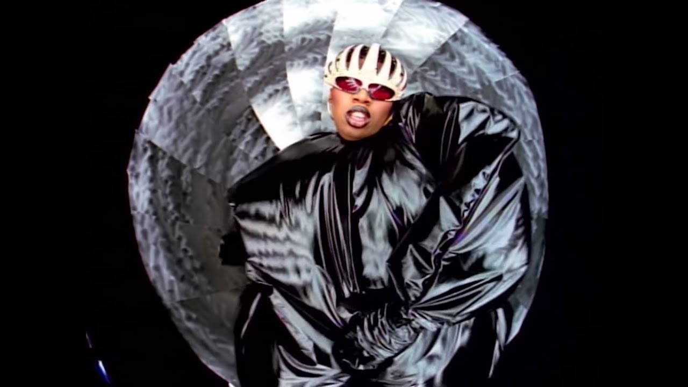
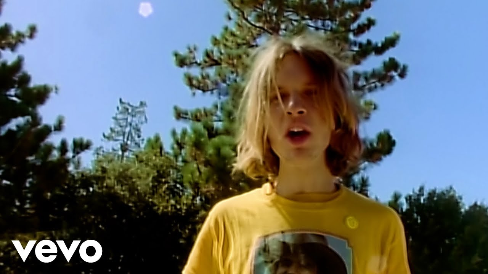
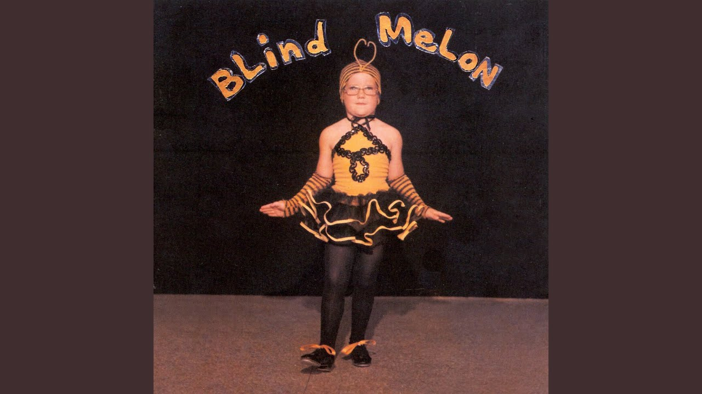
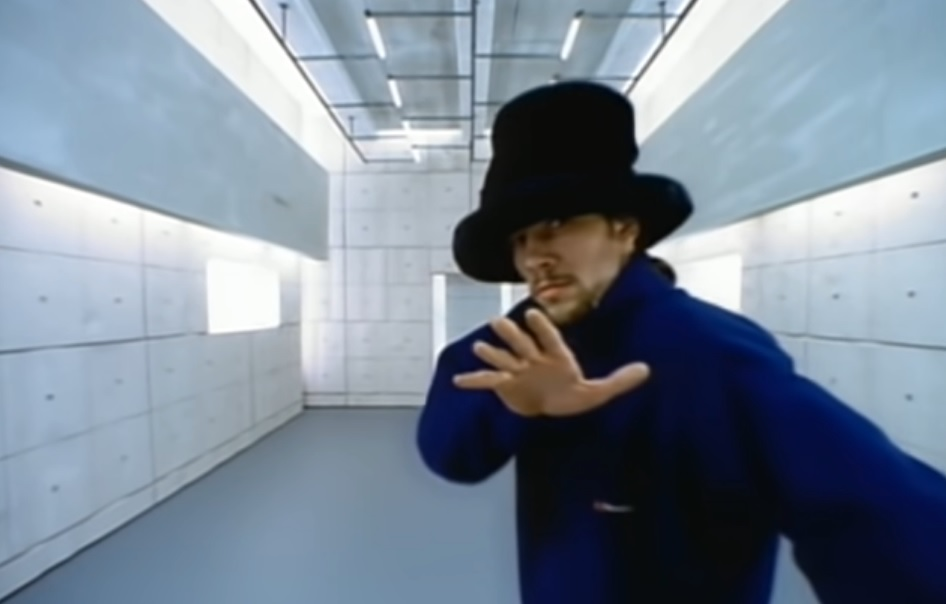
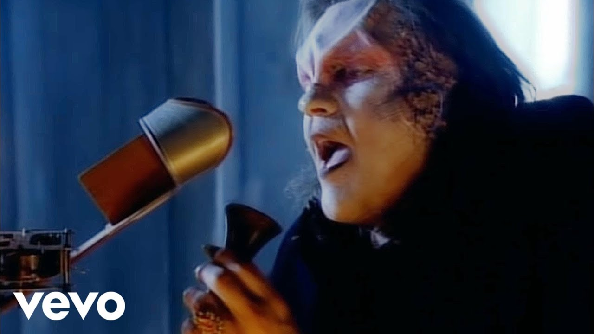
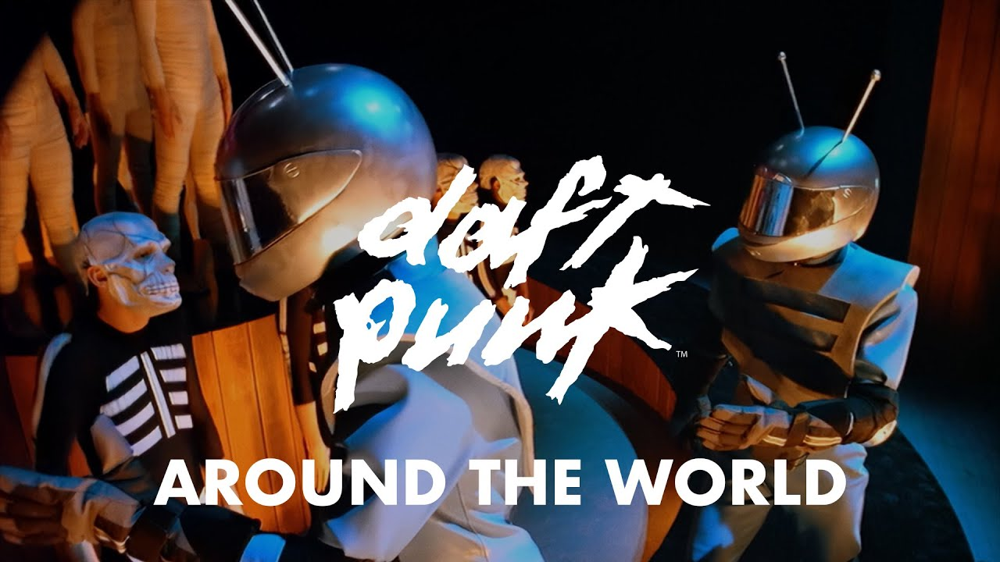
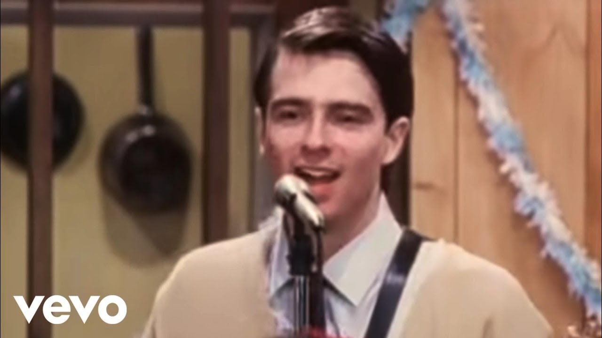
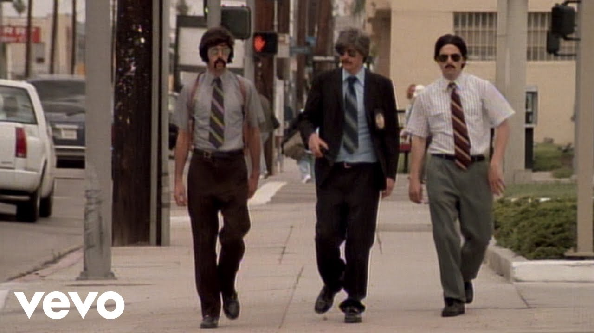
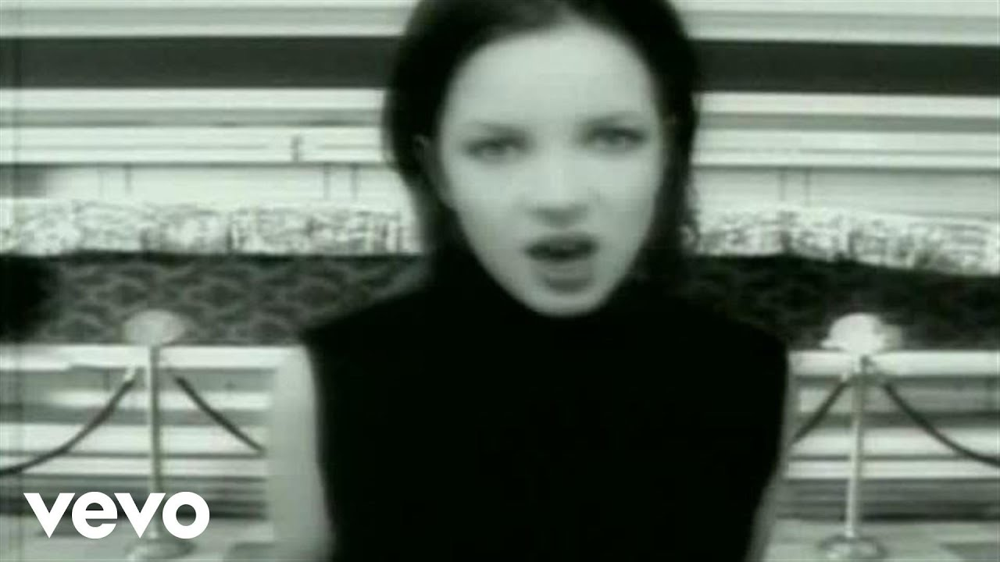

| Video Name | Description | Length | Thumbnail |
|---|---|---|---|
| Missy Elliott - The Rain (Supa Dupa Fly) [Official Music Video] | A groundbreaking singer, rapper, producer and songwriter, Missy Elliott is a hip-hop and cultural icon. | 4:13 |  |
| Beck - Loser (Official Music Video) | Official Music Video for Loser performed by Beck. Soy un perdedor. | 3:52 |  |
| Blind Melon - No Rain | Blind Melon "No Rain" official music video from the album Blind Melon. Heather DeLoach plays the tapdancing "Bee Girl." | 4:07 |  |
| Jamiroquai - Virtual Insanity (Official Video) | "Virtual Insanity" is a song by British funk and acid jazz band Jamiroquai, released on 19 August 1996. | 3:54 |  |
| Meat Loaf - I'd Do Anything For Love (But I Won't Do That) (Official Music Video) | Official video of Meat Loaf performing I'd Do Anything For Love (But I Won't Do That) from the album Bat Out of Hell II. | 7:40 |  |
| Daft Punk - Around The World (Official Music Video Remastered) | Around the world, around the world Around the world, around the world Around the world, around the world Around the world, around the world |
4:01 |  |
| Weezer - Buddy Holly (Official Music Video) | The song's music video, directed by Spike Jonze, earned considerable exposure when it was included as a bonus media file in Microsoft's initial successful release of the operating system Windows 95. | 4:01 |  |
| Beastie Boys - Sabotage (Official Music Video) | The video is presented as the opening credits of a fictional 1970s-style police show called Sabotage, with the band members appearing as the show's protagonists. | 3:03 |  |
| Garbage - Push It | Lead singer Shirley Manson elaborated on the song's dreamy verse structure versus the confrontational chorus: "[It's about] the schizophrenia that exists when you try to reconcile your desires and demons with the need to fit in. It's a song of reassurance". | 4:10 |  |